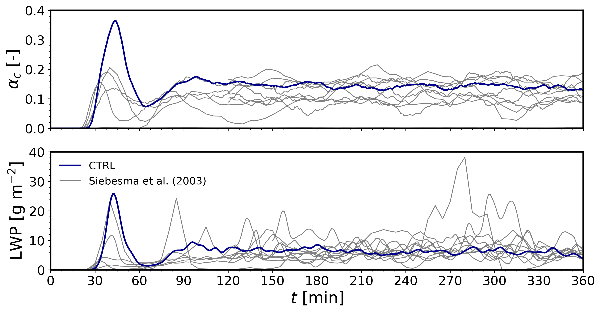
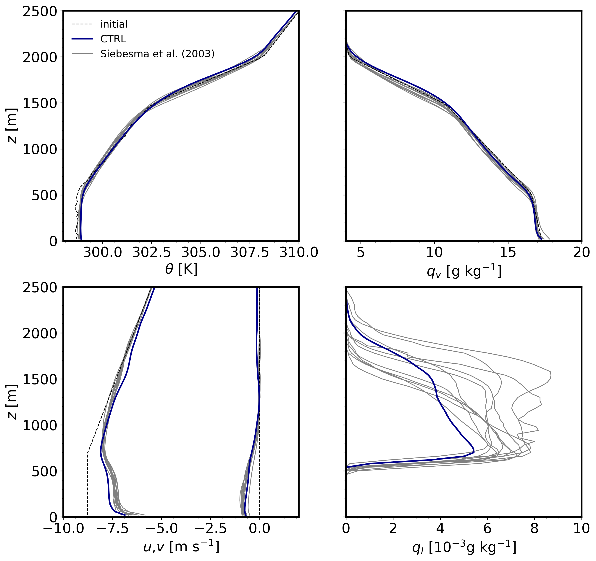
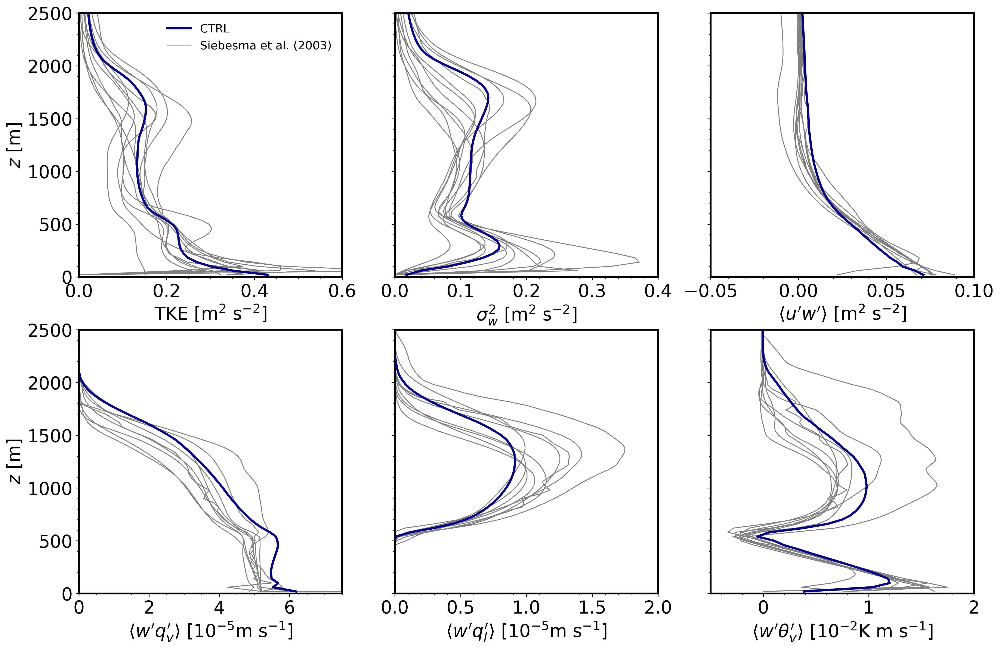

2.4. Moist cloud-topped boundary layer
This tutorial case is the BOMEX LES intercomparison study from Siebesma et al. (2003), corresponding to a non-precipitating shallow cumulus cloud case informed by the Barbados Oceanographic and Meteorological Experiment (BOMEX, Holland & Rasmusson, 1973). The forcing consists of two different sources including prescribed kinematic surface fluxes of sensible and latent heat and large-scale forcing (LSF) tendencies due to mesoscale horizontal advection of water vapor mixing ratio, liquid potential temperature and horizontal momentum. The LSF includes subsidence to compensate the integrated effect of surface fluxes and advection tendencies, formulated as a prescribed time-invariant subsidence profile multiplied by the vertical gradient of horizontally averaged fields accros the domain. The main settings of this case are listed below and are further detailed in Munoz-Esparza et al. (2022).
2.4.1. Input parameters
Number of grid points: \([N_x,N_y,N_z]=[152,146,122]\)
Isotropic grid spacings: \([dx,dy,dz]=[100,100,40]\) m
Domain size: \([15.2 \times 14.6 \times 4.9]\) km
Model time step: \(0.075\) s
Geostrophic wind: \([U_g,V_g]=[10,0]\) m \(\mbox{s}^{-1}\)
Advection schemes: 5th-order upwind (dry dynamics), 3rd-order upwind (water vapor), and 3rd-order WENO (liquid water)
Time scheme: 3rd-order Runge Kutta
Latitude: \(14.94^{\circ}\) N
Surface potential temperature: \(299.1\) K
Surface sensible heat flux: \(8 \times 10^{-3}\) K m \(\mbox{s}^{-1}\)
Surface latent heat flux: \(5.2 \times 10^{-5}\) m \(\mbox{s}^{-1}\)
Surface roughness length: \(z_0=0.0002\) m
Rayleigh damping layer: uppermost \(500\) m of the domain
Initial perturbations: \(\pm 0.1\) K
Depth of perturbations: \(1600\) m
Top boundary condition: free slip
Lateral boundary conditions: periodic
Time period: \(6\) h
Initital conditions: vertical profiles of \(u\), \(q_v\), and SGSTKE as specified in Siebesma et al. (2003)
Large-scale forcings: vertical profiles of subsidence and horizontal advection of potential temperature and water vapor as specified in Siebesma et al. (2003)
2.4.2. Execute FastEddy
Note that this example moist dynamics validation case example requires an additional dataset available as a gzip compressed tape archive file, Moist_BOMEX.tar.gz, at this Zenodo record. The contents of the archive include an initial conditions file FE_BOMEX.0, which is needed to run FastEddy for this case. The archive dataset also contains results from the 11 models that participated in the original Siebesma et al. 2003 model intercomparison as NetCDF files. The FastEddy code will write its output to an output subdirectory. Please create an output directory, if one does not already exist.
Create a working directory to run the FastEddy tutorials and change to that directory.
Create a Example04_BOMEX subdirectory and change to that directory.
Download and unpack Moist_BOMEX.tar.gz, which will create a BOMEX_IC/ subdirectory containing FE_BOMEX.0 and a BOMEX_Siebesma2003_models/ subdirectory creating the above referenced NetCDF files.
Modify the tutorials/examples/Example04_BOMEX.in file to update the value of
inPathproviding the full path to the FE_BOMEX.0 file in the BOMEX_IC/ subdirectory. Be sure to including the trailing slash/.Run FastEddy using the input parameters file tutorials/examples/Example04_BOMEX.in.
See Running under NSF NCAR HPC for instructions on how to build and run FastEddy on NSF NCAR’s High Performance Computing machines.
Note that running this case requires using only 1 GPU instead of 4 GPUs. This requires modification of two lines in the scripts provided in Running under NSF NCAR HPC. The following:
#PBS -l select=1:ncpus=4:mpiprocs=4:ngpus=4:mem=100GB
Should be changed to replace the references to 4 with 1 as follows:
#PBS -l select=1:ncpus=1:mpiprocs=1:ngpus=1:mem=100GB
And, any values of 4 in the last line of the script (the mpirun line for Casper and the mpiexec line for Derecho) should be changed to 1.
2.4.3. Visualize the output
Open the Jupyter notebook entitled FE_Postprocessing_Example04_BOMEX.ipynb.
Under the “Define parameters” section:
Modify
path_root, specifying the full path up to and including the Example04_BOMEX subdirectory. Be sure to include the trailing slash/.Modify
path_inichanging initial/ to BOMEX_IC/. For example,path_ini = path_root + 'BOMEX_IC/'.Modify
path_siebchanging its value to BOMEX_Siebesma2003_models/, if you unpacked the Moist_BOMEX.tar.gz file into the Example04_BOMEX subdirectory. For example,path_sieb = path_root + 'BOMEX_Siebesma2003_models/'.
Run the Jupyter notebook.
The resulting XY cross section png plots will be placed in a Figures_BOMEX subdirectory of the Example04_BOMEX directory.
Open the Jupyter notebook entitled FE_Postrocessing_Example04_BOMEX.ipynb and execute it.
Time evolution of domain averaged total cloud cover (\(\alpha_c\)) and liquid water path (LWP):
{kind=link}

Vertical profiles of potential temperature (\(\theta\)), water vapor (\(q_v\)), horizontal velocity components (\(u\), \(v\)), and liquid content (\(q_l\)). Thin black dashed lines correspond to the initial conditions. Profiles are averaged for the last 3 hr (\(t = 180-360\) min) and over horizontal domain slabs:
{kind=link}

Vertical profiles of turbulence kinetic energy (TKE), vertical velocity variance (\(\sigma^2_w\)), and vertical turbulent fluxes of zonal momentum (\(\langle u'w' \rangle\)), water vapor (\(\langle w'q_v' \rangle\)), liquid cloud, and virtual potential temperature (\(\langle w'q_l' \rangle\)). Profiles are averaged for the last 3 hr (\(t = 180–360\) min) and perturbations are computed as the departure from horizontal slab averages. These turbulence quantities are the sum of resolved and subgrid-scale components.
{kind=link}

2.4.4. Analyze the output
Using the time series of cloud properties, could you identify when the simulated shallow cumulus cloud deck has reached quasi-eqilibrium?
What is the effect of boundary-layer turbulence to the mean profiles of momentum?
Identify the vertical extent of the cloud layer.
Which of the turbulent vertical transport terms is responsible for the resulting vertical liquid cloud distribution?